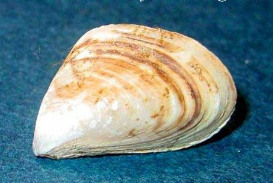

<!DOCTYPE html>
<html>
    <head>
        <title>Lab 2</title>

        <link rel="stylesheet" href="https://unpkg.com/leaflet@1.3.4/dist/leaflet.css"
        integrity="sha512-puBpdR0798OZvTTbP4A8Ix/l+A4dHDD0DGqYW6RQ+9jxkRFclaxxQb/SJAWZfWAkuyeQUytO7+7N4QKrDh+drA=="
        crossorigin=""/>

        <script src="https://unpkg.com/leaflet@1.3.4/dist/leaflet.js"
        integrity="sha512-nMMmRyTVoLYqjP9hrbed9S+FzjZHW5gY1TWCHA5ckwXZBadntCNs8kEqAWdrb9O7rxbCaA4lKTIWjDXZxflOcA=="
        crossorigin=""></script>

        
      <style>
          html, body { margin: 0; padding: 0; height: 100%; }
          #map { min-height: 100%; }
          
   .info {
    padding: 10px 10px;
    font: 14px/16px Arial, Helvetica, sans-serif;
    background: white;
    background: rgba(248,248,255,1);
    box-shadow: 0 0 20px rgba(0,0,0,0.2);
    border-radius: 10px;
}
.info h4 {
    margin: 0 0 5px;
    color: #c324ab;
}         
          
          
                   
.title {
    padding: 10px 10px;
    font: 15px/18px Arial, Helvetica, sans-serif;
    background: white;
    background: rgba(170,191,63,1);
    box-shadow: 0 0 15px rgba(0,153,255,0.2);
    border-radius: 5px;
}
          
        </style>
        
        
    </head>

    <body>
        <div id="map" style="height: 500px"></div>

        <script type="text/javascript">

          var map = L.map('map', {
              center: [45.0522, -82.4846],
              zoom: 6
          });

          L.tileLayer('https://api.tiles.mapbox.com/v4/{id}/{z}/{x}/{y}.png?access_token={accessToken}', {
            attribution: 'Map data &copy; <a href="http://openstreetmap.org">OpenStreetMap</a> contributors, <a href="http://creativecommons.org/licenses/by-sa/2.0/">CC-BY-SA</a>, Imagery &copy; <a href="http://mapbox.com">Mapbox</a>',
            id: 'mapbox.outdoors',
            maxzoom: 3.5,
            minzoom: 3.5,
            accessToken: 'pk.eyJ1IjoiY3VyZW1hbmdvIiwiYSI6ImNpcTQ4cGFwbDAxbmVmd25vZGNiOTVzeGEifQ.GWZByYkIft6eMRha69C8nw'
          }).addTo(map);
                    
            
            
            
            
            var peaksIcon = L.icon({
    iconUrl: 'fish.png', // url that links to the icon image file
    iconSize:     [35, 35], // size of the icon image in pixels
    iconAnchor:   [19, 19], // the top left corner of the icon will be aligned so that this point is at the marker's geographical location
    popupAnchor:  [0, -10] // point from which the popup should open, relative to the iconAnchor
});
            
     var peaksIcon1 = L.icon({
    iconUrl: 'zebra.png', // url that links to the icon image file
    iconSize:     [33, 33], // size of the icon image in pixels
    iconAnchor:   [19, 19], // the top left corner of the icon will be aligned so that this point is at the marker's geographical location
    popupAnchor:  [0, -10] // point from which the popup should open, relative to the iconAnchor
});
                
       var peaksIcon2 = L.icon({
    iconUrl: 'worm.png', // url that links to the icon image file
    iconSize:     [33, 33], // size of the icon image in pixels
    iconAnchor:   [19, 19], // the top left corner of the icon will be aligned so that this point is at the marker's geographical location
    popupAnchor:  [0, -10] // point from which the popup should open, relative to the iconAnchor
});     
     var peaksIcon3 = L.icon({
    iconUrl: 'ale.png', // url that links to the icon image file
    iconSize:     [37, 37], // size of the icon image in pixels
    iconAnchor:   [19, 19], // the top left corner of the icon will be aligned so that this point is at the marker's geographical location
    popupAnchor:  [0, -10] // point from which the popup should open, relative to the iconAnchor
});     
     var peaksIcon4 = L.icon({
    iconUrl: 'carp1.png', // url that links to the icon image file
    iconSize:     [39, 39], // size of the icon image in pixels
    iconAnchor:   [19, 19], // the top left corner of the icon will be aligned so that this point is at the marker's geographical location
    popupAnchor:  [0, -10] // point from which the popup should open, relative to the iconAnchor
});     
       var peaksIcon5 = L.icon({
    iconUrl: 'goby.png', // url that links to the icon image file
    iconSize:     [30, 30], // size of the icon image in pixels
    iconAnchor:   [19, 19], // the top left corner of the icon will be aligned so that this point is at the marker's geographical location
    popupAnchor:  [0, -10] // point from which the popup should open, relative to the iconAnchor
});   
            
            
    
           var marker1 = L.marker([43.17,-78.69], {icon: peaksIcon1}).addTo(map);
            var marker2 = L.marker([43.45,-87.22], {icon: peaksIcon1}).addTo(map); 
            var marker3 = L.marker([41.68,-87.54], {icon: peaksIcon4}).addTo(map);
            var marker4 = L.marker([42.06,-81.33], {icon: peaksIcon5}).addTo(map);
            var marker5 = L.marker([45.05,-83.48], {icon: peaksIcon3}).addTo(map);
            var marker6 = L.marker([47.72,-86.94], {icon: peaksIcon2}).addTo(map);
            
            
            
            var pic1 = ''
            '';
            var pic2 = '';
            var pic3 = '';
            var pic4 = '';
            var pic5 = '';
            var pic6 = '';
            var pic7 = '';
            var pic8 = '';
            var pic9 = '';
            var pic10 = '';
            var pic11 = '';
            var pic12 = '';
 
             
            
            
            marker1.bindPopup('<p style="color:green; font-weight:italic"> Lockport Waste Treatment Plant, New York, Lake Ontario.<p style="color:green; font-weight:italic">The species was unintentionally introduced into the United States’ Great Lakes<p style="color:green; font-weight:italic"> through the discharge of contaminated cargo ship ballast water.<p style="color:green; font-weight:italic">Attach to and kill native mussels.</p>' + pic1 + pic10);
            marker2.bindPopup('<p style="color:green; font-weight:italic"> Over a period of 15 years Diporeia densities dropped due to Quagga Mussel, in Lake Michigan. <p style="color:green; font-weight:italic">Quagga are prodigious water filterers, thus removing substantial amounts of phytoplankton from the water and altering the food web</p>' + pic2 + pic11);
            marker3.bindPopup('<p style="color:green; font-weight:italic"> Asian Carp has been detected near the Chicago Waterway Canal. <p style="color:green; font-weight:italic"> The Great Lakes have been under siege by more than 180 invasive species, and the impact of Asian carp could be quite severe. <p style="color:green; font-weight:italic"> Asian carp are prolific, can grow as large as 4 feet long and 100 pounds, <p style="color:green; font-weight:italic">and eat up to 5-10% of their body weight each day in plankton, the base of the Great Lakes food web.</p>' + pic9 + pic3);
            marker4.bindPopup('<p style="color:green; font-weight:italic"> Round Goby in Lake Erie. <p style="color:green; font-weight:italic">Round gobies  have a competitive advantage over native species due to a well-developed sensory system <p style="color:green; font-weight:italic"> that allows for enhanced water movement detection and the ability to feed in complete darkness.<p style="color:green; font-weight:italic"> Their diet consist of some native snails, aquatic insects, other males’ eggs and smaller individuals</p>' + pic7 + pic4);
            marker5.bindPopup('<p style="color:green; font-weight:italic"> Alewive compete with native fish for zooplankton, small fishes and shrimp. <p style="color:green; font-weight:italic"> The Sea Lamprey nearly wiped the Alewives predator and then the alewives population exploded in 1960s.<p style="color:green; font-weight:italic"> Alewives entered the Great Lakes through the Welland Canal</p>' + pic8 + pic5);
            marker6.bindPopup('<p style="color:green; font-weight:italic"> Lamprey gained access to the upper Great Lakes due to the improvements of thr Welland Canal. <p style="color:green; font-weight:italic"> Sea Lamprey major cause of collapse of Lake Trout, Lake Whitefish - fish that were the mainstay of a thriving Great Lakes fishery. <p style="color:green; font-weight:italic"> During high peak of Sea Lamprey populations up to 85% of fish that were not killed, were marked by Lamprey attack wounds. <p style="color:green; font-weight:italic"> Fisheries were devasted and the jobs related to the regions economy.</p>' + pic6 + pic12);
            
      
             
        //NEW - use a for loop to iterate through all the marker and define the functions so that we don't need to do this many times       
            
        //NEW - create an array to hold all the markers 
        var markerList = [marker1, marker2, marker3, marker4, marker5, marker6];
            
        var i; 
        for (i = 0; i < markerList.length; i++){
            var marker = markerList[i];
            
            marker.on("click", function(){
                this.closePopup();
                info.update(this._popup.getContent());
            });
            
            //NEW - I also added the function below so that the control returns to default when mouseout
            marker.on("mouseout", function(){
                info.update();
            });
        };
            
        var info = L.control();

        info.onAdd = function (map) {
            this._div = L.DomUtil.create('div', 'info'); // create a div with a class "info"
            this.update();
            return this._div;
        };

        // method that we will use to update the control 
        info.update = function (popup) {
            this._div.innerHTML = '<h4>Negative Impacts of Invansive Species</h4>' + 
                (popup ? popup : '  Hover over a species');
        };

        info.addTo(map);     
              
            
                
            
            
    var title = L.control({position: 'bottomright'}); // position of the title

title.onAdd = function (map) {
    this._div = L.DomUtil.create('div', 'title'); // create a div with a class "title"
    this._div.innerHTML = "<h3>Negative Effects Invasive Species have on the Great Lakes</h3>";  // Title text, may use html to customize
    return this._div;
};

title.addTo(map);  
            
            
            
        </script>
   </body>
</html>


